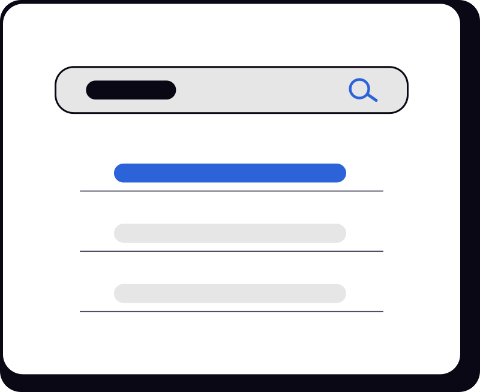

วิธีแก้ FortiClient VPN เชื่อมต่อไม่ได้หลังอัปเดต Windows
ตรวจสอบ network profile, VPN adapter และ restart FortiClient service ตามขั้นตอน...
ตรวจสอบ network profile, VPN adapter และ restart FortiClient service ตามขั้นตอน...
ตรวจสอบ IP address, print spooler และ driver ของเครื่องพิมพ์...
คู่มือเชื่อมต่อเครือข่ายองค์กรและวิธีลงทะเบียนอุปกรณ์...

Try another keyword or choose a different category.